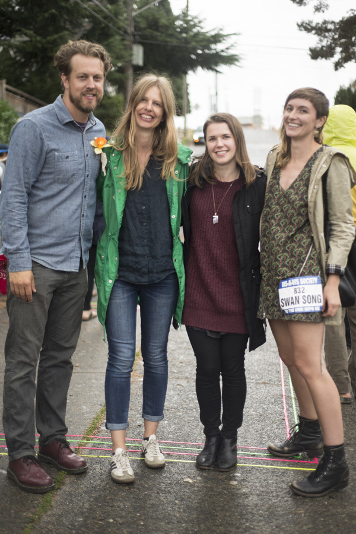

This is an image of DK Pan's project Time is Memory (Seattle Sky). Due to adverse weather conditions the skywriting happened on Sunday August 30th 2015 - the day after NEPO 5k. If you were lucky to look up you would have seen the letters appearing in the sky, one by one, and then dissipating, fading away.
NEPO 5K Don't Run happened just like that: conjured up it appeared as if from the thin air in 2011. Today, after five years of building and creating NEPO 5K Don't Run is but a faint memory. It was a fun exhilarating ride (as - I imagine- was the pilot's flight that day). It took us for a spin and offered a whole new perspective. I'll be sorting through those memories for a long time.
Here are some photos to remind us of all the great things that just happened.
____________________________________________________________
I don't even know where to start so I will start at the end. And what an end it was! I feel like we went through all the seasons (Seattle seasons anyway) and related weather phenomena all in one day. Fittingly my emotional states followed a similar pattern finally settling down on happy and extremely grateful.
Thank you to all the participating artists for all your brilliant creativity and hard work. I'm sure this year has proven difficult for many of you and tested the limits of what it means for you and your art to exist outside, unprotected and exposed to the elements. For us, seeing your flexibility and resolve to make it work (against all atmospheric odds) meant a world. It is what propelled us forward through the mayhem of last week's preparations.
Thank you! Although this project is ending we hope to work with you in the years to come and find new ways to collaborate.
Thank you to all the volunteers who helped to make this possible, without you we would be blowing in the wind!
The End is ... Long live NEPO!

I also want to acknowledge and give thanks to my amazing collaborators Sierra Stinson, Zack Bent and Serrah Russell. I think it is rare to find people with whom you are able to co-create a monster project like this one, on a shoestring, for five years in a row and still love them and be best friends. I feel lucky to have them in my life.
____________________________________________________________Call for art projects

NEPO 5K DON'T RUN 2015
This year NEPO 5k Don't Run will take place on August 29th, 2015. The upcoming event will be particularly meaningful for us as it will be the fifth and final iteration of NEPO 5K Don't Run in this location. It it will mark an ending of an amazingly transformative five year cycle. We want it to be a culmination and a celebration of all the creativity and love poured over these city streets over the past five years. Help us make this LAST HURRAY memorable. Read more and submit your proposal here.
The application deadline is April 10th.
____________________________________________________________Welcome Serrah!
NEPO House is pleased to announce that the amazing and talented Serrah Russell will be joining our curatorial team for NEPO 5k 2014. Besides being a great visual artist working primarily in collage, Serrah is a founder and curator of Violet Strays, an online exhibition space. Make sure to check them out periodically. Anyway, we are happy to have you on board Serrah!
____________________________________________________________
YAY! Here are some video highlights from NEPO 5k 2013:
Video by Brad Vanderburg.
Video documentation of Max Kraushaar's spectacular performance Occupational Health Psychology at NEPO 5k 2013.
Thank you!
..and as they say Another year is shot to hell.

Another NEPO 5k behind is us, and a giant THANK YOU goes to all the artists, creators and collaborators for making it the one-of-a-kind, wonderful experience that it is. We love collaborating with you and seeing all your creations come to life! Another major THANKS! goes to sponsors, volunteers and not-runners - you know we couldn't make it happen without you!
xo klara, Sierra and Zack
____________________________________________________________
Must perambulate
NEPO 5k in Seattle Magazine: ____________________________________________________________NEPO 5k Don't Run 2013
Yep, that's right - another year, another 5k coming up! Sierra, Zack and I are doing it again, currently buried deep in forms, spreadsheets and other planning tools. We are all looking forward to walking the route with artists and brainstorming about their proposals. The date is September 7th 2013, route will switch back to it's original direction heading back to Beacon Hill. Make sure to mark your calendars!
To all artists: We are currently collecting proposals for site specific artwork and performances - if you have a brilliant idea send it our way at info@nepohouse.org. Deadline is June 1st.
cheers, klara, Sierra and Zack ____________________________________________________________Special Little treat show coming up: December 22, 2012, 6-9 pm
We Live Our Patient Day's Allotted Span
Little Treats show by Mandy Greer, Paul Margolis, Hazel Margolis

THANK YOU to all the artists that made such a wonderful work for NEPO 5k Don't Run this year!
Immense gratitude also goes to my great coconspirators/collaborators Sierra Stinson and Zack Bent, to our sponsors and to all the people and volunteers who made this event possible. And last but not least, thanks to all of you that came not running with us! Check out event photos here and come again! xok
OMG NEPO 5k DON'T RUN is coming up! SATURDAY SEPTEMBER 8, 2012
As you may imagine it's a very exciting - and very stressful - time here at NEPO control center. There are some details to be ironed out, red tape removed and few burning hoops jumped through, but all in all it's coming together nicely, not in the least thanks to my stellar co-curators Sierra Stinson and Zack Bent.
Did I mentioned that the route will be reversed? For the semblance of consistency we have to do something backwards - for those of you who still didn't figure this out: NEPO is OPEN BACKWARDS. So there, the route goes backwards this year. That also means that it goes downhill (and it's shortened). However you look at it it's a win-win situation. NEPO is back - expect the unexpected!
There are around 70 talented artists participating this year: Vis-a-Vis Society, Britta Johnson, Gretchen Bennett, Nathaniel Russell, Paul Komada, Lindsey Apodaca, MKNZ, Ruth Marie Tomlinson, Taylor Pinton, Matthew Hilger, Whitney Ford-Terry, Rumi Koshino, Joanna Lepore, Erin Elyse Burns, Graham Downing, Max Kraushaar, Virginia Wilcox, Hanita Schwartz, Meital Katz-Minerbo, Glenn Herlihy, Leanne Grimes, Brandon Aleson, Ken Turner, Serrah Russell, Sarah Galvin, Maggie Carson Romano, Eric John Olson, Anne Blackburn, Lauren Max, C.M. Ruiz, Nicholas Nyland, Nat Evans, Aaron Asis, Anna Koosmann, Stephen Sewell, Julia Haack, Ye-Ye Collective, Fictilis, Kate Clark, George Rodriguez, John Osebold, Chris Buening, Seth Damm, Keeara Rhoades, A K Mimi Alin, Allyce Wood, Andrew Peterson and meadow starts with p, Andy Fallat, Diana Falchuk, JD Banke, Eric E. Aguilar, NKO, Devon Midori Hale, Keely Isaak Meehan and Manifold Motion, Bryan Schoneman, Zack Bent, Jennifer Zwick, Rodrigo Valenzuela, Amanda Manitach, Alice Ghosti, Baso Fibonacci, Seanjohn Walsh and more.
I can't wait for all these fun, exciting and thoughtful projects come to life!
Finish-line show MCed by Jake Stratton will feature live music by Bavarian Village Band, multimedia show by Airport, DJ Never Leaves, performance by Seattle Butoh Festival, DAIPANbutoh dancers, storefront video installations, LxWxH pop-up store, food trucks and beer garden (cross your fingers, we are still working out the logistics).
Date: Saturday September 8, 2012
Time:
Registration by Vis-a-Vis Society at NEPO House 2:30-4:00pm
Don't Run 4:00-7:00pm
Finish-line show 6:00-10:00pm
Where:
Start at NEPO House on Beacon Hill (1723 S Lander Street, Seattle, WA 98144)
Finish in front of Kobe Terrace Park in the International District (S Main Street and Maynard Avenue S)
NEPO 5K DON'T RUN is organized by NEPO House. NEPO House is an Associated Program of Shunpike. This event is made possible by funding from 4Culture and the City of Seattle Office of Arts & Cultural Affairs. This program is also supported, in part, by a grant from the Washington State Arts Commission, and a grant from the National Endowment for the Arts (NEA).
More info on our home page. ____________________________________________________________Gearing up for NEPO 5k DON'T RUN 2012
NEPO 5k is hoping, skipping, crawling, jaunting, hobbling, trekking, stumbling, trotting, moonwalking, unruning and noruning back in 2012! Save your non-running energy and mark your calendars for Saturday September 8th 2012.
In addition to our new curatorial team consisting of Sierra Stinson, Zack Bent and myself, NEPO House is partnering with Dirk Park, Bryan Ohno and Beth Cullom to make this event even more awesomer. I'm supper excited to work with all of them!
There will be some changes - of course - to the course, but I won't say more till later. So stay tuned for more details!
Watch an awesome new movie trailer from the NEPO 5k 2011. ____________________________________________________________
Little Treats will be taking a break
Both Little Treats programing and I will be taking a break in the spring and summer 2012.
But before that happens -- and to make sure we go out with a bang -- Spaghetti CO. will present "Nepo is our part time home" - a one-night-only performance on Saturday March 17, 2012. More info here. Make sure to come see this!
____________________________________________________________Funding for the next 5k (and HAPPY NEW YEAR!)
Thank you Seattle Office of Arts & Cultural Affairs for the NCA Grant to fund our second annual NEPO 5k!
____________________________________________________________Exciting Little Treats ready for Fall and Winter
Make sure to visit our Little Treats page for a truly delicious programing coming up this Fall and Winter. Mark your calendar!
____________________________________________________________Sorting through the NEPO 5k documentation
It took me >FOREVER< to sort through the hundreds of photos, but here it is: the encapsulation of the moment is almost complete as you can see on these pages. Speaking of forever: I feel like the old man Cronos most definitely had his fingers in this project. It was a walk through time as much as it was a walk through space. A chronological journey of experiences that were meant to build upon each other. In your imagination you can follow the journey here and if you pay attention you will see the light (and shadows) change throughout the day...
____________________________________________________________NEPO 5k DON'T RUN was a huge success!
It took me some time to sort out through hundreds of photos, but finally you can see photos and video from the event here. More video is coming up.
And don't forget to check out photos from the 5k NEPO House show.
Many, many thanks
to team NEPO and all the talented, hardworking and super responsible(!) artists who made NEPO 5k Don't Run so extraordinarily special! Also thanks to all (p)articipants for coming (and not running), thanks to Seattle for being a cool city and thanks to whoever is up there for the great weather!
This event is made possible by generous grants from Sprout Seattle, 4Culture, Seattle Office of Arts & Cultural Affairs and Beacon Hill Merchants. Thank you!
Thank you 911 Media Arts for lending your technical expertise and equipment support.
Brought to you by NEPO House with warm greetings from Team NEPO: Klara Glosova, Amanda Manitach, Bond Huberman, Rumi Koshino and Leanne Grimes. With support from Todd Jannausch, Erin Shafkind, Susanna Bluhm and Seth Damm. Banners by Francesca Lohmann. Logo by Troy Gua.
____________________________________________________________Mark your calendars
NEPO 5K DON'T RUN
9/10/11
Start @ 2pm in Occidental Park
Finish @ Beacon Hill Light Rail Station and enjoy community
celebration and (potentially) a beer garden
Stay for: NEPO show 6pm-12pm
at NEPO House
____________________________________________________________
REMINDER: Little Treats opening is this Saturday!
I'm Sorry. Thank You. I Love You.
by Rumi Koshino
June 11, 2011 - 6-8pm. More info here.
Bake Sale for NEPO 5k: DON'T RUN
Look for our shopping cart filled with home baked goodies: NEPO Bake Sale will take place around the TK building this First Thursday - June 2, 2011.
BAAAM, you can hit the proverbial two birds with one hit: satisfy your sweet tooth while art-walking and help NEPO House raise money for the first ever DON'T RUN .
If you don't want the calories and rotten teeth consider donating right here (click the pledge button on the left). NEPO House is a non-profit art organization under Shunpike's Partner Artist Program. All proceeds will go to producing NEPO 5k DON'T Run - a city wide art event open and free to public.
____________________________________________________________
NEPO 5K DON'T RUN takes home the Sprout Award
NEPO House is super excited to win the 3rd Sprout award. Thank you Sprout Seattle, we will put your grant money to a very good use on our next project NEPO 5k: DON'T RUN! We were honored to be presenting among such talented artists and exciting projects. We thought all the projects were very inspiring and deserving. Also many thanks to all that attended Sprout dinner last night and made this award possible.
Read more about Sprout on Joey Veltkamp's Best of.
For those who may not know, mark your calendars - the very first DON'T RUN will take place in Seattle on September 10th 2011 (9.10.11).
Here is a short video preview to give you a taste of what's coming up:
____________________________________________________________COMING TO SEATTLE 9/10/11 - WATCH OUT!
For more info about NEPO 5k DON't RUN go here.
____________________________________________________________Call to performance artists
We are still on the hunt for enthusiastic artists to create installation and performance art along the outdoor NEPO 5K route.
We're open to just about anything: multimedia installation, dance, music, windmills, shopping carts, cool stuff we haven't heard of, and more!
(Some people have signed up already, but we won't tell you who, because surprises are fun :)
Interested? Sign up here.
Or drop us a line at info@nepohouse.org and describe what you would like to do as soon as possible. Deadline to express interest is June 20.
Volunteers and general enthusiasts welcomed year round.
____________________________________________________________NEPO House show reframed
Hello NEPO artists!
While we were already changing everything (willingly or not) we thought what the heck and also reframed the concept for the NEPO House show. We have abandoned the idea of an auction (which felt a little tight and stifling to wild experimentation which we hope will take place). So instead of thinking of and interpreting "action" (our key concept for this event) as a merely physical, kinetic activity, we want to take a broader view and include a plethora of activities that artists engage in. We want to take a look at action as a social performance.
This is where you come in. The theme of the show at this NEPO House will be the deconstructed world of the artist. It should be a blast, and there are a lot of ways to participate. Here's the overview of what's going on.
The NEPO Rooms:
The Curator's Room: an archive of images provided by participating artists will be available in the curator's room for spontaneous and continual re-arrangement, providing a platform for perpetual re-contextualization and development of new narratives.
The Critics' Room: Seattle's art critics will be live-tweeting the event and the tweets will be physically printed (to press!) as soon as they're posted online. These print-outs will be posted on a wall in the critics' room for discussion, perusal, and further deconstruction. (Runs from 6 pm - 8 pm)
The Dealers' Room: four prominent Seattle dealers and gallerists will be seated around a round table conversing amongst themselves. (Runs from 6 pm - 8 pm)
The Soapbox: a literal soapbox in the upstairs bathroom will provide the ultimate platform for self-promotion, tirades, interviews, or performance (sky's the limit!). A live feed camera will be recording whatever happens on the soapbox and sending it to a video monitor downstairs. (Runs from 6 pm - 8 pm)
The Gallery: a room dedicated to the traditional presentation of works for quiet contemplation and viewing.
Social Room: for this NEPO House the kitchen is an area reserved exclusively for drinking (no art involved here whatsoever), emphasizing the strictly social (and free-booze-and-food) aspect of art openings. Facebook and Facetime activities encouraged.
Big Loud Art Room: - (living room) available to house a large (larger) sculpture, interactive piece or installation, performance.
Plus the "Institutions" of higher art and learning represented in some shape or form on our spiral(ing) staircase.
Stay tuned for more changes!
Questions? Ideas?
Contact: nepohouse@gmail.com
5K preparation hits a running start (but in the end, ends up walking)
As might be expected, organizing the NEPO event of the year - more expansive and far-reaching than ever before - has been a complex process and kept us on our toes. In the past two months the projected goal of NEPO 5K Show and Run has taken a U-turn and evolved a bit.
Instead of a 5K run, the September 10th event will be a NEPO 5K DON'T RUN (the City of Seattle was ultimately unable to give us a permit to run in the streets, so we renamed our event accordingly). The new scheduled route of events will begin in Pioneer Square at Occidental Park and will integrate a number of performance art events as well as the participation of area galleries. Along the route to NEPO House, guests will find neighborhoods turned inside out (a city wide OPEN house) and will encounter a variety of happenings, interventions, and performances performed by local artists. This NEPO 5K DON'T RUN (hop, skip, crawl, jaunt, hobble, trek, stumble, trot, moonwalk, walkabout, nur, unrun and norun) is scheduled for 4pm - 6pm. The route concludes at NEPO House, which will be hosting its (un)usual blend of art, performance, and inversions from 6pm - 9pm. Mark your calendars accordingly!
-------------------------------------------------------NEPO House & Shunpike
After a few meetings with some of the staff at Shunpike, as of March 2011 NEPO House is pleased to announce the beginning of a partnership with Shunpike as one of its Associated Programs. Committed to helping small and mid-size organizations like NEPO House manage financial and administrative tasks, Shunpike is a much-appreciated service staffed by a great group of individuals. We're happy to be on board. Thank you, Shunpike!
___________________________________________________________NEPO House forms a board of directors
In November 2009 NEPO House opened its doors to the public for the first time, conceived nurtured, sustained, and organized solely by founder Klara Glosova. After a year of operation and many openings later, NEPO is all grown up - at least enough to require some additional help. A group of six artists, writers, and organizers from across Seattle - many of whom have participated in various NEPO events since its conception - have joined together with Klara to form NEPO's inaugural board of directors. Current members include Bond Huberman, Amanda Manitach, Todd Jannausch, Rumi Koshino, Erin Shafkind, and Susanna Bluhm Callahan.
___________________________________________________________Still wondering what NEPO is all about?
Watch a short NEPO video created by Brad Vanderburg.
More photos from the latest show here
____________________________________________________________September 1, 2010: Check out what's coming up!
NEPO 4: Back to School, Back to Earth Special!
- - preparations are in full swing - tune in soon for more info - -
Please pencil in your calendars:
Saturday September 25, 2010, 6-12
___________________________________________________________
NEPO 3: Air, Water, Fire (we will leave the Earth behind)
>>> June 5, 2010
So here is prety much a full scoop.
___________________________________________________________
Update on Painting NEPO letters:
After receiving some house painting advice from a professional, I decided to paint the letters on another sunny day (TBD) with some help from neighborhood folks. Hopefully it will be done before the party.
So, NO need to bring ladders and brushes to the party - Thank you!
___________________________________________________________May 3, 2010: more info about NEPO 3: Air, Water, Fire
(we will leave the Earth behind on this one)

About number 3: it is shaping up as a lot of audio/visual work and projections inside and outside of the house. Included will be work about waves, clouds, stars, garbage and the things we leave behind, sunsets, various weather phenomena, flying in dreams and more.
(As to why only three elements were included: it is our third show, so we decided to stick with three elements in order to not run ahead of ourselves. I will tell you a little later how it all turned out - or come to the show to see for yourself.)
NEPO 3 event will have two components: action and projection
The action part: you are invited to participate and help me paint big red N E P O letters on the side of the house. You are encouraged to bring a tall ladder (if you have one) and a paint brush (if you have one). This will take place in the afternoon or early evening - if weather permits. I was hoping to get (and eat) a bunch of cherries since the inspiration behind this project comes from "FRESH CHERRIES" sign in Eastern Washington - but looking at the current weather trend I doubt they will be in season. We will see.
Projections and performances: will take place as soon as sun goes down (exactly at 9:01 pm) - stay tuned for performance and music schedule.
SAVE THE DATE: SATURDAY, JUNE 5, 2010
Back here soon with more,
klara
May 1, 2010: preparations for NEPO 3 are underway
Hello friends,
I hope you are ready for the next installment at the NEPO House (a.k.a. home_page.project), because coming up in about a month is
NEPO 3: Air, Water, Fire (we will leave the Earth behind on this one)
I will be back here with more info shortly. For now
SAVE THE DATE: SATURDAY, JUNE 5, 2010
Happy spring to all, klara
p.s. the second ELEMENTAL meeting for artist participating in NEPO3 is TUESDAY, May 4, 6pm at our house.
___________________________________________________________Check out some photos from Open Hou?e: Nepo show here
Plus our new name stuck: home_page.project is now NEPO House!
___________________________________________________________in related news: make your own HOME_PAGE comic strip
David Lasky is offering his artwork, a comic strip created for our last NEPO show, as a "Free Comic Book Day DIY Art Installation". You can follow this link , print your own HOME_PAGE cartoon and post in on your fridge. Voila!As Scott McCloud says: "David Lasky is an Evil Genius".
___________________________________________________________JANUARY 8 2010! - coming up : pu gnimoc


 put on your TOP HEAD
put on your TOP HEAD
and come to our house for a second Open House planning meeting. If you want to participate in the Open House show at the end of February this is your chance to see the spACE!
What: OPEN HOUSE planning and brainstorming meeting
When: Friday January 8th, 6pm
Where: 1723 S Lander Street, Beacon Hill, Seattle

p.s. Happy 2010 everyone!!! ___________________________________________________________
Later that day: December 16 2009
this is what truly happened:
hordes of little orange people invaded our tea party and ate what was left of the cookie-cutter houses!
___________________________________________________________INVITATION: First Open House Meeting
when: Wednesday Dec 16th, 6:00 pm
on the agenda: Bake your own house and Eat it too.
BYOS: bring your own sprinkles
see map for directions:
DECEMBER 10 2009 - Call for Artists: Next Show: Open House

Next show coming up at home_page.project is titled Open House. Even though some helpful dictionary definitions are provided below the title of this show is open to interpretation. Please help to bring it into high-resolution focus by submitting your artwork, ideas, creations and images.
If you would like to participate in this show please come to our First Open House meeting at my house on Wednesday December 16th 6:00 pm. You are invited to stop by for a chat, cup of tea and maybe some holiday cookies. (I was going to call it a Tea Party - but decided against it since it might attract the wrong crowd these days!). If you cannot make it because of general holiday overload - there will be another chance the Second Open House meeting will be on Friday January 8th, 6:00 pm. If you cannot attend either but would like to be part of the show please email: klara-at-pictureband.com. You can submit your work in jpeg format by email by January 31th 2010.
The estimated date for the Open House Show/Event is Saturday February 27th.
Now, what is this?

Take our home made quiz:
a) a new SDOT 3D signage for drivers to avoid collisions with houses
b) a super creative crew doubling in some sculpture work while waiting for the day to be over (it is supposed to be a giraffe, but the head and neck are still missing)
c) this is what happens when you take your house for a walk.
Look below for an answer.

Here are some helpful dictionary definitions:

 ___________________________________________________________
___________________________________________________________
Read after party report here
___________________________________________________________NOVEMBER 28 09 - kick off PARTY!
plus FAST ACTING FORMULAS show
Save the date: SATURDAY November 28, starts at 7pm - ends?
1723 S Lander Street
October 09 - updates
It is official: I made A DOT ON THE MAP

Looking forward towards 2010: projected launch of the home page project! Give me a shout if you want to participate/collaborate.
___________________________________________________________brainstorming and talks about collaboration w ARTS CORPS
A couple of weeks ago I met with Lara Davis and Lauren Atkinson and we talked about cooperation on the home_page.project. I am very excited about this, I have worked with them at Kimball Elementary and they are my favorite arts organization connecting practicing artists across all disciplines with kids - they will go anywhere kids need more art (=many places). Lauren mentioned the upcoming show at the Frye: Tim Rollins and Kids of Survival (K.O.S.) - as something to think about and get inspired by. Having a couple of my own I think it would be great to include kids in the home_project.experiment.
--------------------------------------------------------------------------------------LIMITS and BOUNDARIES: an idea for a show?
I want to curate a show about "Limits and Boundaries". It will explore artist's take on dealing with limitations, something many people are experiencing these days, mainly on economic and material levels. But those levels affect other realms and cause adjustment of ideas and thoughts. While the concept of limits might not be one of the most popular in the history of humankind (at least not in our western civilization where we think we would love to keep expanding indefinitely), in my mind limits and boundaries are not necessarily a negative thing - they can be freeing and liberating as well as grounding. They bring people down to earth and make them work and create within real not just imaginary parameters and, I should add, sometimes produce real as opposed to imaginary works.
I feel the theme is fitting, because our house is an example of creating something within a very tight set of rules and limitations and discovering a unique solution. The limits were instrumental to the creation.
Then there is the other way to look at it: transgressing, dissolving, erasing, blending boundaries. Just because - just because boundaries, limits exist (in real world or our imagination). Just because we are humans ...\\\???
What is your take on this? Email me if you would like to contribute your ideas, work or thought experiments.
--------------------------------------------------------------------------------------another idea for show: My Home Is My Castle (Looking for Home Inside and Out)
Where does our sense of security, safety and privacy come from? Is there a such a place as home. If yes, where is it?also, home made, home baked ... more on this coming up later. ___________________________________________________________
Interior Spaces
Here are some pics of the interior spaces (notice I have cleaned up). More info about the house can be found on archiweb.cz - go to: -->places-->america-->usa-->Seattle. Direct link is here (warning - text in czech!). Email me if you want to come for a home visit.


 ___________________________________________________________
___________________________________________________________
What, where and why about home_page.project
The main idea is to develop project space/gallery in my house on Beacon Hill, and to present a series of art shows and events relevant to our place and moment in time. I want to open the space in my home to both artists and audiences. My aim is to organize shows, readings and performances that comment on, contribute to, and experiment with, the very moment we live in. I hope to create new connections among local artists and community and to share our work and ideas with larger audiences. The very idea of having art shows/events in my home is about sharing, being local and open.
Why in my house? In my mind, blending of private and public realms, is reflective of living and working in the present moment (i.e. the ubiquitous Reality TV shows, You Tube, Blogs and general trends of decentralization). In the sea of virtual spaces and information, this project is about making a real, physical, YOU ARE HERE, dot on the map. I think of it as creating real, physical, flesh-and-bones website that exists in body as well as in spirit. If a website is my home in the virtual world, then I want my home to be a website in the real world. Just like a website I want my home to fully reflect what I do and who I am. I want to use this project as a platform for experimenting with curatorial ideas, create site specific installations and performances and bring the artwork out of established venues in to the neighborhood where I live.
a cherry on top: on my recent road trip I got inspired by a huge FRESH CHERRIES sign in eastern Washington. The letters in the photo are just a mock-up, but I plan to make it real. ______________________________________________________
NEPO House is an Associated Program of Shunpike.
______________________________________________________Please email your comments and ideas to info [at] nepohouse.org